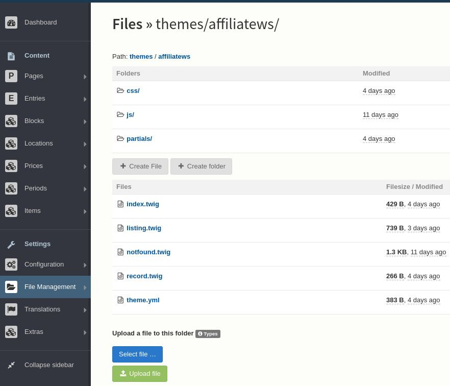
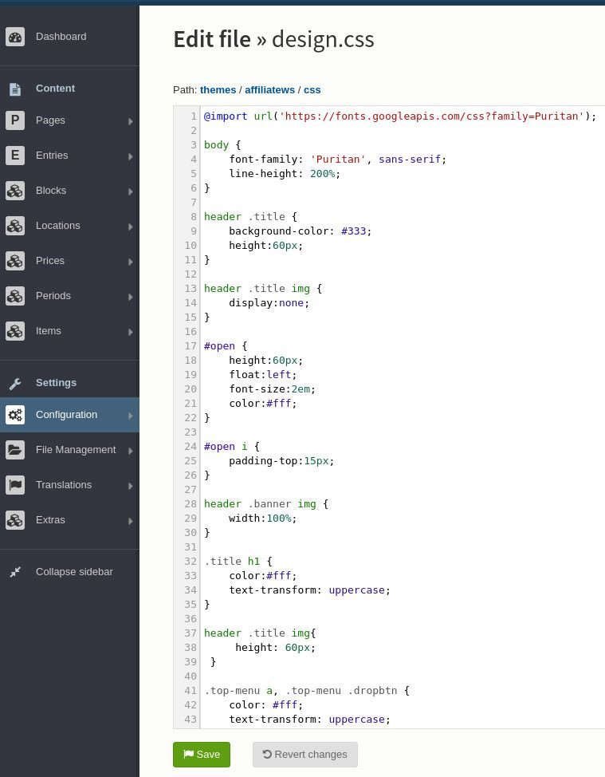

Edit the template¶
In the dashboard, pass over “File Management” and click “View/edit templates” then click on “affiliatews” to edit the affiliate website template.
This picture illustrates what you should see. It may vary according to the version of the template or the configuration of your website.
To change the design of your website, click on “css” and then “design.css”.
You should reach the online editor as on the following picture.
HTML and CSS¶
If you have absolutely no clue about HTML, we recommand you to read this http://www.htmldog.com/guides/html/beginner/
If you have absolutely no clue about CSS, we recommand you to read this http://www.htmldog.com/guides/css/
HTML/CSS colors¶
To understand how a color is represented in css or html, we recommand you to read the colors tutorial on https://www.w3schools.com/colors/default.asp
To easily find an appropriate color and convert it to the html/css code, use an HTML Color picker : http://htmlcolorcodes.com/color-picker/
Change the background color of the header¶
In the online editor, find :
header .title { background-color: #333; [...] }
change the code #333 with the color of your choice.
Note : the code #333 might be different. Just change what comes between “background-color:” and “;”
For instance for a red background color :
header .title { background-color: #ff0000; [...] }
Change the links’ color¶
Find or add the following code :
a { color: #11ee11; }
The HTML color might be different. Replace the HTML color by the color of your choice
Do the same for the following code if you want to change the color when passing over with the mouse :
a:hover { color: #aaffaa; }
You can add as well if you want to add or remove the underline of the link :
text-decoration: none;
or
text-decoration: underline;
For instance you can add set it this way to remove the underline to a link but add it when passing over with the mouse :
a { color: #11ee11; text-decoration: none; }a:hover { color: #aaffaa; text-decoration: underline; }